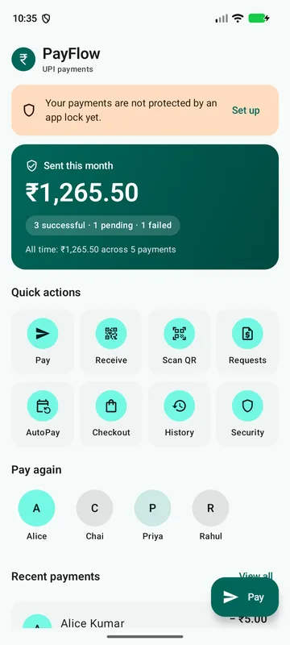
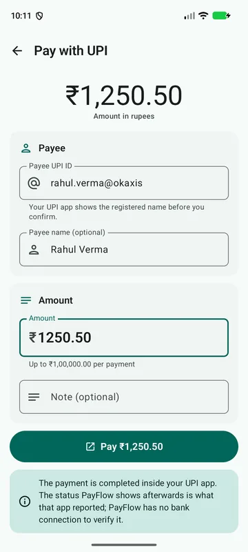
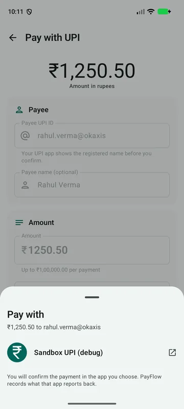
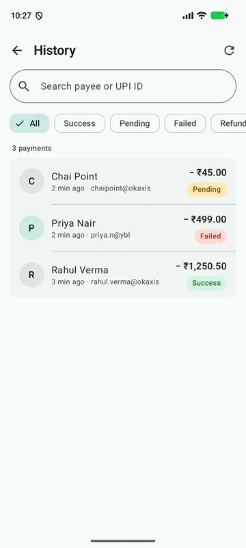

Android · Kotlin · Jetpack Compose
PayFlow
A UPI payments app that hands payments to installed UPI apps or a built-in sandbox, and keeps a local payment ledger that can't settle the same payment twice.
- Problem
- On mobile networks a payment request can succeed while the response gets lost. A naive retry then charges the user again.
- What I built
- The app end to end: Compose UI, UPI deep-link handling, QR scan and receive, collect requests, AutoPay mandates, Keystore-encrypted storage, PIN and biometric lock.
Architecture and engineering details
Architecture
MVVM with clean layers (ui/, domain/, data/) and Hilt modules. Every external SDK (UPI apps, payment provider, ML Kit, Play Integrity) sits behind an interface with a fake, so the whole flow runs on an emulator. Money is stored as Long paise, never floating point.
Interesting details
- Status changes are compare-and-set SQL:
UPDATE … WHERE id = :id AND status = :expected(data/local/PaymentDao.kt). If two callbacks race, only one wins. - The idempotency key is saved with a unique index before the provider call, so a retry reuses it instead of creating a second payment.
- A result reported by another UPI app is stored as "reported, not verified". The app records where each status came from.
- The PIN is hashed with PBKDF2-HMAC-SHA256 (150,000 iterations). Profile data is encrypted with an Android Keystore AES-GCM key.
Challenges
Testing UPI flows without a bank. I wrote a debug-only fake UPI app (SandboxUpiActivity) so the real intent round-trip can be exercised on an emulator.
Testing
Unit, Robolectric and Compose UI tests; Roborazzi screenshot tests; and a separate stress-test task. A Kover rule fails the build below 80% coverage on domain and data. No CI is set up yet.
Limits
There's no real payment provider or bank. Collect, AutoPay and integrity checks run against sandboxes.